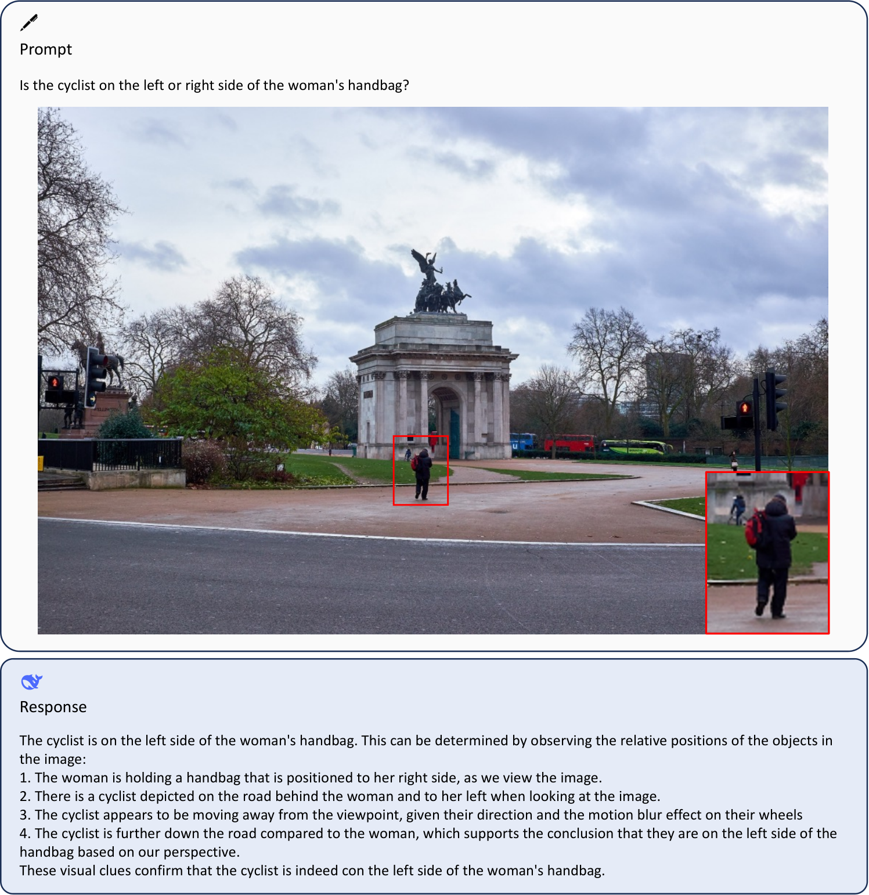
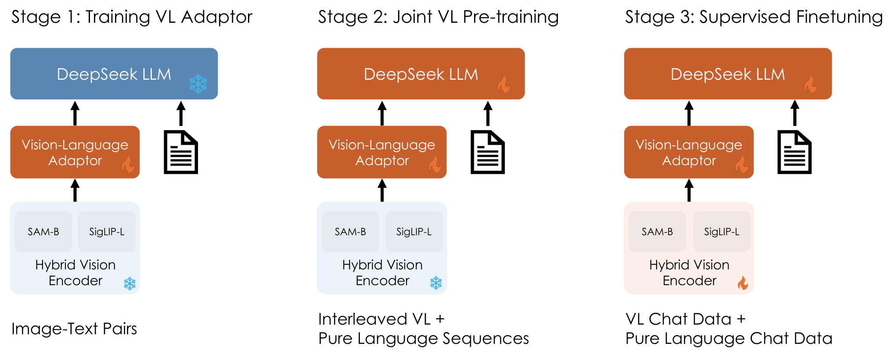
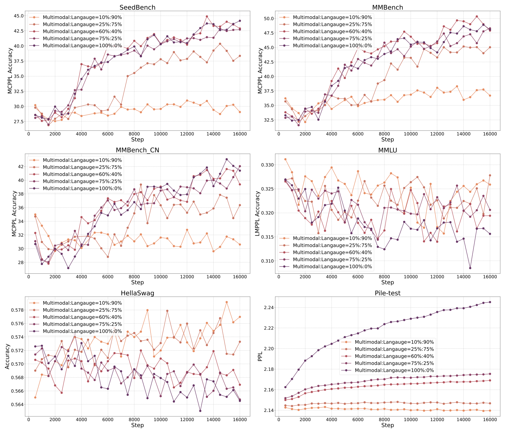

DeepSeek-VL：混合视觉编码器与语言—多模态联合预训练¶
💡 DeepSeek-VL 用 SigLIP 提供视觉语义、SAM 补充高分辨率细节，并通过联合预训练和模态比例渐进调整，在增加视觉能力时尽量保留语言能力。
视觉语言模型不能只做到“能看图说话”：密集文字、图表、网页、界面和空间细节，都要求视觉编码器提供足够的信息；同时，把语言模型继续训练成多模态模型还可能损害原有语言能力。DeepSeek-VL 因而同时研究视觉表示与训练流程。它在有限的视觉 token 预算中融合两类编码器，再将适配器预热、语言—多模态联合预训练和指令微调分开。报告发布 1.3B 与 7B 级模型，通过公开基准、语言测试、人工评估及多组消融，说明真正关键的不只是增加一个 projector，还包括让语言模型本身参与学习、控制模态竞争，以及稳定地监控训练。
数据：从图文配对到真实任务指令¶
预训练数据包括交错图文网页、图像描述、OCR 文档以及图表等。交错图文让模型接触图片与上下文的关系，OCR 渲染对提供密集文字的监督，图表和文档则补充仅靠自然照片难以覆盖的结构信息。
| Category | Dataset | Ratio |
|---|---|---|
| Interleaved image-text | MMC4 ( Zhu et al., 2024 ) | 13.1% |
| Wikipedia EN& CN ( Foundation, ) | ||
| Wikihow ( Yang et al., 2021 ) | ||
| in-house PDF and Epub textbooks | ||
| Image caption | Capsfusion ( Yu et al., 2023a ) | 11.1% |
| TaiSu ( Liu et al., 2022b ) | ||
| Detailed Caption ( echo840, 2024 ) | ||
| Table and chart | Chart2text ( Kantharaj et al., 2022 ) | 2.1% |
| Geo170K ( Gao et al., 2023 ) | ||
| Ureader ( Ye et al., 2023 ) | ||
| Unichart ( Masry et al., 2023 ) | ||
| M-paper ( Hu et al., 2023 ) | ||
| ScienceQA ( Lu et al., 2022b ) | ||
| ScreenQA ( Hsiao et al., 2022 ) | ||
| SciGraphQA-295K ( Li and Tajbakhsh, 2023 ) | ||
| Paper2figure100k ( Rodriguez et al., 2023 ) | ||
| Widget Captioning ( Li et al., 2020 ) | ||
| Screen2words ( Wang et al., 2021 ) | ||
| Refexp ( Mao et al., 2016 ) | ||
| Web Code | Websight ( HuggingFaceM4, 2024 ) | 0.4% |
| python plots scraped from GitHub notebook | ||
| Scene text OCR | ArT ( Chng et al., 2019 ) | 1.2% |
| MLT-17 ( Nayef et al., 2017 ) | ||
| LSVT ( Sun et al., 2019 ) | ||
| UberText ( Zhang et al., 2017 ) | ||
| Coco-text ( Veit et al., 2016 ) | ||
| RCTW-17 ( Shi et al., 2017 ) | ||
| ReCTS ( Zhang et al., 2019 ) | ||
| TextOCR ( Singh et al., 2021 ) | ||
| OpenVINO ( Krylov et al., 2021 ) | ||
| HierText ( Long et al., 2022 ) | ||
| Document OCR | arXiv rendered markdown ( Blecher et al., 2023 ) | 2.1% |
| Text-only corpus | DeepSeek-LLM 2T text copus ( DeepSeek-AI, 2024 ) | 70.0% |
表是多模态预训练数据内部的分布，不能与后文“纯文本占整体联合预训练约 70%”混为一谈。指令阶段另按真实应用建立任务分类，涵盖识别、理解与推理等，既使用公开数据，也补充内部构造的指令。
| Class | Dataset | Ratio |
|---|---|---|
| In-house Data | SFT data based on taxonomy (Figure 3 ) | 10.5% |
| General Multi-modality | ShareGPT4V ( Chen et al., 2023 ) | 35.5% |
| LAION-GPTV ( LAION, 2023 ) | ||
| LVIS-Instruct4V ( Wang et al., 2023a ) | ||
| textOCR-GPT4V ( Carter, 2024 ) | ||
| LLaVA1.6-GPT4V ( Liu et al., 2024a ) | ||
| IconQA ( Lu et al., 2021 ) | ||
| Table and chart | Ureader ( Ye et al., 2023 ) | 4.1% |
| Geo170K ( Gao et al., 2023 ) | ||
| ScienceQA ( Lu et al., 2022b ) | ||
| Web Code | Screen-to-code ( Abi, 2024 ) | 2.0% |
| ScreenQA ( Hsiao et al., 2022 ) | ||
| Text-only SFT | DeepSeek-LLM ( DeepSeek-AI, 2024 ) | 47.9% |
这里的内部任务分类数据占 10.5%；模型并不是只靠这部分数据获得全部视觉能力。图像描述、一般视觉问答和文档任务分别承担不同监督作用。论文正文与个别示意图的数据比例标注存在不一致时，联合训练的文本比例以方法正文给出的 language:multimodal≈7:3 为准。
架构：语义与细节在通道维融合¶

SigLIP-L 接收 \(384\times384\) 图像，提供语义较强但分辨率有限的特征；SAM-B 的图像编码器接收 \(1024\times1024\) 图像，补充高分辨率的局部结构。后者在这里不是输出分割掩码，而是作为视觉特征提取器。
SAM 分支先输出 \(64\times64\times256\)，插值到 \(96\times96\times256\)，再经过两个 stride=2 的卷积，形成 \(24\times24\times1024\)，即 \(576\times1024\)。SigLIP 分支也提供 \(576\times1024\)。两分支分别做特征适配，再沿通道拼接成 \(576\times2048\)，经共享变换映射到语言模型输入空间。
因此融合后仍是 576 个视觉 token，不是把两组 token 简单拼成 1,152 个。可以把该过程概括为 \(V=W_{\rm shared}[f_{\rm SigLIP}(I);f_{\rm SAM}(I)]\)，分号表示通道拼接；实际实现还包含分支 MLP、激活及形状变换。
7B 模型采用混合编码器，1.3B 模型采用 SigLIP。语言部分沿用 DeepSeek LLM 的 RMSNorm、SwiGLU 和 RoPE，1.3B 与 7B 起始语言检查点分别约训练过 500B 与 2T 文本 token。
三阶段训练及其必要性¶

适配器预热¶
冻结视觉编码器和 LLM，只训练连接二者的适配器。数据为约 125 万图像描述对和 250 万 OCR 渲染对，先建立图像特征与语言输入空间之间的联系。
但小型 MLP 的容量有限，不能期望只扩大这一阶段的数据，就让冻结的 LLM 学会所有视觉概念。报告直接比较了预热步数：
| Stage 1, Training Step | MMB | MMC | SEED | POPE | MMMU | Average |
|---|---|---|---|---|---|---|
| 2K | 59.0 | 54.0 | 61.8 | 82.3 | 30.3 | 57.5 |
| 8K | 58.0 | 45.0 | 58.5 | 84.9 | 29.2 | 55.1 |
| 20K | 56.0 | 52.3 | 59.0 | 81.7 | 28.6 | 55.5 |
| 80K | 58.1 | 55.0 | 58.6 | 78.6 | 27.9 | 55.6 |
由 2k 增至 80k 步，平均分没有提高，个别任务还下降。这项消融针对“冻结主体、仅训练适配器”的路线，不是说多模态数据扩展普遍无效。
语言—多模态联合预训练¶
冻结视觉编码器，更新适配器与语言模型。直接全部喂多模态数据会让语言指标明显恶化，作者认为原因包括视觉语料相对简单、分布差异与模态竞争。因此最终保留约 70% 纯文本、30% 多模态数据。

图中的不同配比表明，加入文本能显著缓解语言退化，而且不必付出同等程度的视觉损失。这里不是先把语言训练完成后永久冻结 LLM，而是在联合训练中保留语言任务的梯度。
训练还采用两项措施。模态预热从全语言数据开始，逐渐过渡到目标比例，避免训练初期的突变。模态分组让不同 step 分别处理纯文本或多模态 batch，减少文本样本等待视觉计算；论文报告训练效率提高约 20%，并非模型推理普遍快 20%。
1.3B 模型直接生成选项时指标波动很大，因此训练监控采用多选题 PPL：分别计算候选答案的条件似然，选择困惑度最低者；同时混入少量 SFT 数据，改善答案格式遵循。报告强调要区分“不会题”和“知道但没有按评测格式输出”。
监督微调¶
用视觉指令与纯文本对话混合训练，只监督 assistant 回答及相关特殊 token，屏蔽用户和 system 输入。更新 LLM、适配器与 SigLIP；受显存限制，SAM 保持冻结。这样最终模型才从多模态条件语言建模器转成可对话助手。
| Stage 1 | Stage 2 | Stage 3 | MMB | MMC | SEED | POPE | MMMU | Average |
|---|---|---|---|---|---|---|---|---|
| ✓ | ✓ | 59.4 | 54.2 | 61.4 | 82.5 | 29.2 | 57.4 | |
| ✓ | ✓ | 63.4 | 60.5 | 65.9 | 87.1 | 31.8 | 61.7 | |
| ✓ | ✓ | ✓ | 64.3 | 61.3 | 66.7 | 87.6 | 32.2 | 62.4 |
完整三阶段平均分 62.4；跳过联合预训练为 57.4，跳过适配器预热为 61.7。主要收益来自主体参与的联合预训练，而适配器预热仍有小幅增益。
超参数与训练系统¶
| DeepSeek-VL 1B | DeepSeek-VL 1B | DeepSeek-VL 1B | DeepSeek-VL-7B | DeepSeek-VL-7B | DeepSeek-VL-7B | |
|---|---|---|---|---|---|---|
| Vision Encoder | SigLIP | SigLIP | SigLIP | SigLIP+SAM | SigLIP+SAM | SigLIP+SAM |
| Hyperparameters | Stage 1 | Stage 2 | Stage 3 | Stage 1 | Stage 2 | Stage 3 |
| Learning rate | \(1.0\times 10^{-3}\) | \(3\times 10^{-5}\) | \(2.0\times 10^{-5}\) | \(1.0\times 10^{-3}\) | \(4.2\times 10^{-5}\) | \(2.0\times 10^{-5}\) |
| LR scheduler | Cosine | Step | Cosine | Cosine | Step | Cosine |
| Weight decay | 0.0 | 0.0 | 0.0 | 0.0 | 0.0 | 0.0 |
| Gradient clip | 1.0 | 1.0 | 1.0 | 1.0 | 1.0 | 1.0 |
| Optimizer | AdamW( \(\beta_{1}=0.9,\beta_{2}=0.95\) ) | AdamW( \(\beta_{1}=0.9,\beta_{2}=0.95\) ) | AdamW( \(\beta_{1}=0.9,\beta_{2}=0.95\) ) | AdamW( \(\beta_{1}=0.9,\beta_{2}=0.95\) ) | AdamW( \(\beta_{1}=0.9,\beta_{2}=0.95\) ) | AdamW( \(\beta_{1}=0.9,\beta_{2}=0.95\) ) |
| Warm-up steps | 128 | 2000 | 256 | 128 | 2000 | 256 |
| Training steps | 15000 | 96000 | 10000 | 15000 | 42000 | 10000 |
| Batch size | 256 | 1024 | 256 | 256 | 2304 | 256 |
| Sequence length | 512 | 4096 | 4096 | 512 | 4096 | 4096 |
| Sequence packing | \(\times\) | ✓ | \(\times\) | \(\times\) | ✓ | \(\times\) |
| Pipeline parallelism | \(\times\) | \(\times\) | \(\times\) | \(\times\) | ✓ | ✓ |
7B 联合预训练为 42k steps、batch 2304、长度 4096，1.3B 为 96k steps、batch 1024；两个规模的训练步数不同，不能只凭模型大小比较总计算量。SFT 学习率为 \(2\times10^{-5}\)，适配器预热为 \(10^{-3}\)。
系统使用 HAI-LLM，视觉编码器和文本 embedding 作为流水线的首模块，重新分配后续层以平衡各 stage。视觉模块较小但结构不适合直接套标准张量并行，因此在 tensor-parallel ranks 上重算其前向。7B 使用 64 个节点、每节点八张 A100，训练约五天；1.3B 使用 16 个相同节点约七天。
公开视觉、语言与人工评测¶
| 模型 | MMMU | MMBench | MMBench-CN | SEED | OCRBench | POPE | MathVista | MMVet |
|---|---|---|---|---|---|---|---|---|
| LLaVA-Next 7B | 35.8 | 67.4 | 60.0 | 70.2 | — | 86.5 | 34.6 | 43.9 |
| DeepSeek-VL 1.3B | 32.2 | 64.6 | 61.3 | 66.7 | 409 | 87.6 | 31.1 | 34.8 |
| DeepSeek-VL 7B | 36.6 | 73.2 | 72.8 | 70.4 | 456 | 88.1 | 36.1 | 41.5 |
| GPT-4V | 56.8 | 75.0 | 74.7 | 71.6 | 659 | — | 47.8 | 49.9 |
MMBench 使用 dev 集，视觉公开测试采用 greedy generation，再解析答案。OCRBench 是原始分数，不能与百分数直接平均；论文计算综合均分时做了归一化。7B 在中英文 MMBench 上表现较强，但 MMMU、数学视觉推理与部分开放式视觉问答仍明显落后于闭源大模型，不是所有任务都优于同级开源模型。
| 语言指标 | DeepSeek-LLM 7B Chat | DeepSeek-VL 7B Chat |
|---|---|---|
| HellaSwag | 68.5 | 68.4 |
| MMLU | 49.4 | 52.4 |
| GSM8K | 63.0 | 55.0 |
| MBPP | 35.2 | 35.2 |
| AGIEval | 19.3 | 27.8 |
语言测试中，多选题使用候选 PPL，而数学与代码使用任务对应的生成评测。保留语言能力的结论是整体层面的，GSM8K 仍有下降，不能写成“所有文本能力无损”。
人工测试另外覆盖现实场景，比较不同模型的回答偏好。它补充公开基准不能覆盖的交互体验，但其题目分布与主观评价方式不同，不能把偏好胜率直接换成标准基准准确率。附录展示 OCR、表格、定位和代码等案例，用于说明任务覆盖，不作为独立统计证据。
编码器与适配器消融¶
| Architecture | MMB | MMC | SEED | POPE | ScienceQA | MMMU | OCRB | Average |
|---|---|---|---|---|---|---|---|---|
| Sequence Concatenation: | Sequence Concatenation: | Sequence Concatenation: | Sequence Concatenation: | Sequence Concatenation: | Sequence Concatenation: | Sequence Concatenation: | Sequence Concatenation: | |
| Token Pooling - W | 61.2 | 59.6 | 61.6 | 86.5 | 57.7 | 31.6 | 304 | 55.5 |
| Token Pooling - H | 59.9 | 58.3 | 61.6 | 83.8 | 55.0 | 32.0 | 291 | 54.2 |
| Embedding Concatenation: | Embedding Concatenation: | Embedding Concatenation: | Embedding Concatenation: | Embedding Concatenation: | Embedding Concatenation: | Embedding Concatenation: | Embedding Concatenation: | |
| Hybrid MLP | 61.7 | 60.1 | 62.9 | 87.8 | 56.6 | 31.3 | 309 | 55.9 |
| Shared MLP | 62.0 | 58.9 | 62.5 | 86.6 | 54.7 | 30.2 | 318 | 55.2 |
| Separate MLP | 57.5 | 58.7 | 63.1 | 86.5 | 56.6 | 29.0 | 299 | 54.5 |
在固定视觉 token 预算下，通道拼接配合混合 MLP 的平均结果最好：先各分支适配，再共享融合，比全部共享或全部分离更稳。序列拼接若保持 token 数不变，需要池化，反而损失部分信息。因此结果并不等于“通道拼接永远好于序列拼接”，关键是比较时受同样 token 预算约束。
视觉编码器消融还显示，引入视觉自监督编码器能改善训练损失；但报告为节省成本缩短了相关训练，不能把该训练损失曲线直接当作每个最终任务的独立增益。整体结论是：高分辨率细节、语义特征和主体联合训练相互配合；小适配器上的扩展不足以替代完整的多模态学习。